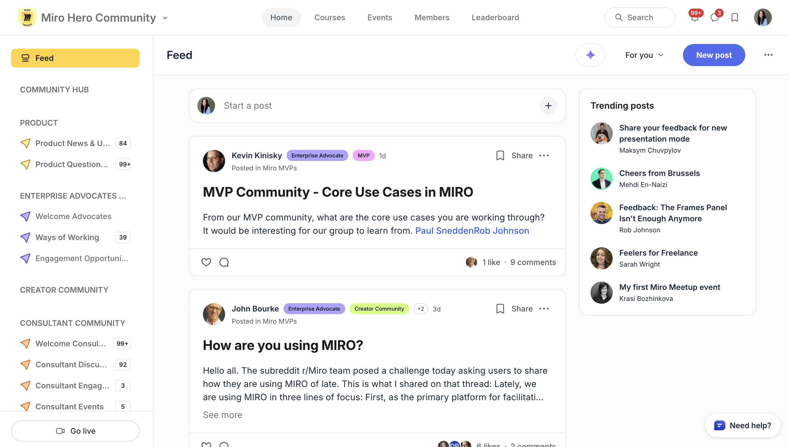

Enterprise Community & Customer Advocacy
BEFORE
Ad hoc advocacy requests, one-off event outreach, legacy CAB with little member commonality and no roadmap influence. No structured relationships in top enterprise accounts.
AFTERTwo coordinated programs targeting top accounts by ARR — a power user community (Miro Heroes) engaging end users in product, design, and engineering; and a Lighthouse/CAB program engaging decision makers. VP+ contacts activated across public speaking, sales references, PR/AR, and customer story video.
78%
YoY community growth
20
top accounts by ARR activated
MAU lift
in target accounts
